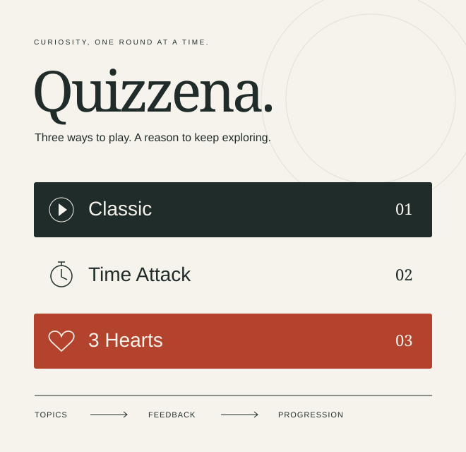

01 Product / Android
ReleasedQuizzena
Making room for a little
curiosity, every day.
A quiz app built around short sessions, immediate feedback, and topic progression. I took it from a product idea through AI-assisted development to an Android release.
- My role
- Creator, product direction & release
- What you can inspect
- A released Android app on Google Play

Try Quizzena on Google Play (opens in a new tab)